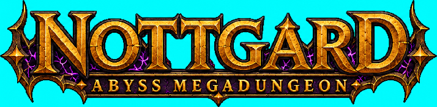
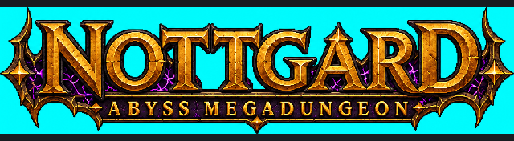
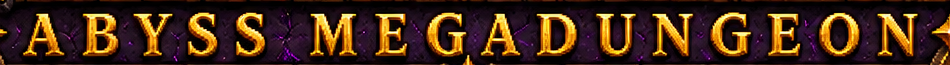
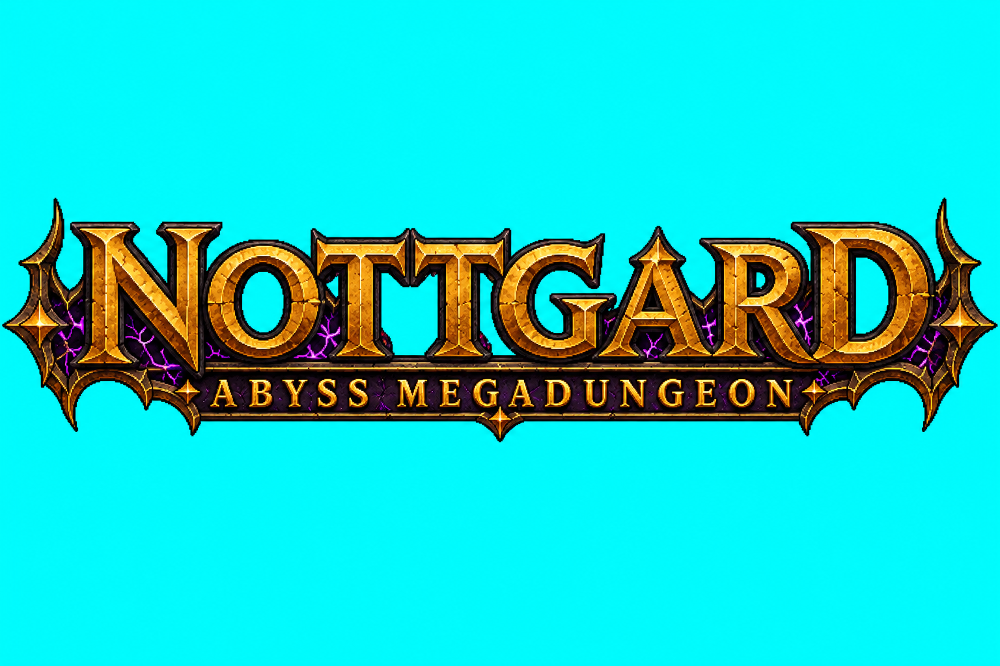
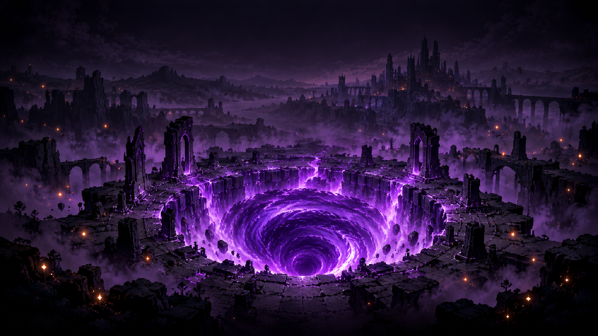

Texto conferido visualmente: NOTTGARD / ABYSS MEGADUNGEON. Sem hífen e sem SURVIVORS. Direção visual da fonte v01 aceita pelo dono em 16/10/2026; nenhum asset do título substituído.
Fonte original 1536×1024 · Manifesto e hashes · Prompt enviado · Entrega para Claude
Recorte diagnóstico do conteúdo, sem remoção de ciano. Mantendo proporção ~4,06:1, a prévia fica em 714×176. A segunda linha tem cerca de 20,5 px pela medição manual dos glifos na fonte; não é medição de captura em jogo.



ABYSS (5 letras) e MEGADUNGEON (11 letras). A contagem antiga de 17 letras no prompt-base foi corrigida sem mudar a grafia aprovada.

Contorno detectado x3/y303/w1530/h377; não toca a borda, mas as margens laterais são estreitas. A linha inferior ficou proporcionalmente menor que os ~40% pedidos no prompt; a prévia oferece avaliação de legibilidade. Ciano é chave de cor, não transparência final. A detecção ampla do ciano não comprova ausência de halo fino.
Fundo existente, somente para comparar clima/paleta; não é captura nem montagem de implementação:

Checkpoint da direção visual LN01 v01 concluído. Preparação de alfa, contraste sobre o título real, altura efetiva da segunda linha e aceite desktop/mobile permanecem com a implementação. Conteúdo DRAFT, sem promoção canônica.